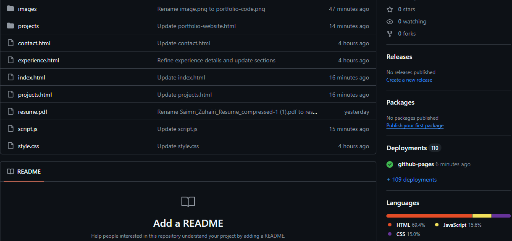
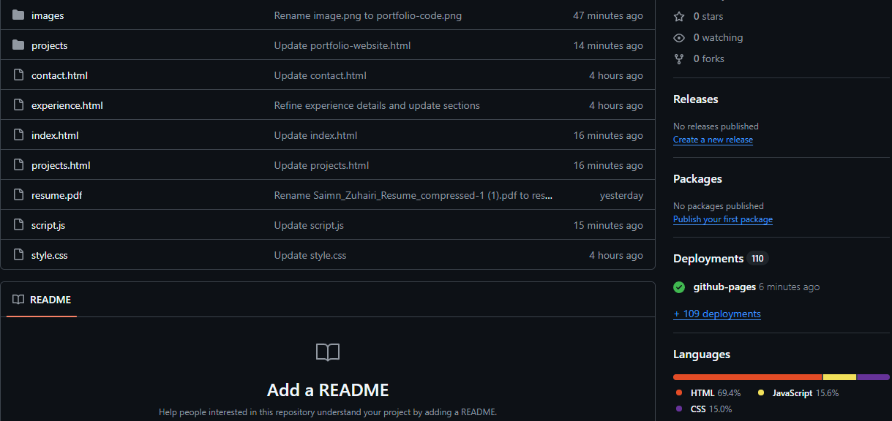

Responsive Portfolio Website
Implementation notes
- Static architecture: HTML/CSS/JS on GitHub Pages — no frameworks to keep TTFB low.
- Performance:
- Lazy images + width/height to avoid layout shifts (CLS) and reduce initial network cost.
- One deferred JS file; starfield capped, debounced on resize, and paused when the tab is hidden.
- Page transitions via CSS classes (no libraries), typical overhead under 2 ms.
- Accessibility:
- Semantic landmarks, descriptive links, alt text for all imagery.
- Theme palettes tuned for contrast (target WCAG AA).
- Lightbox ESC-to-close; click-away to dismiss; no focus traps.
- Data & build:
- Repo snapshot documents recent deployments and language split.
- Future: inline critical CSS and small SW for offline viewing; Lighthouse check for FCP/LCP/CLS.
- Structure: lowercase filenames; assets in
images/; themes via body classes.
Back to projects


 
